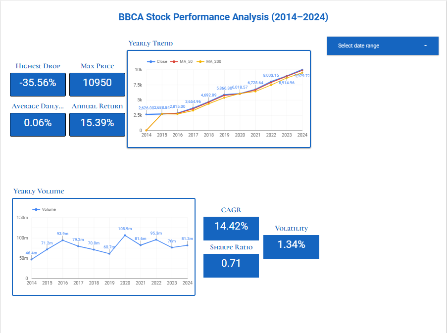

BNSP Certified Data Analyst
CertifiedRecognized certification demonstrating competency in transforming raw data into structured analysis, visual insights, and decision-ready reports.
View CertificateI build analytical projects that combine data cleaning, exploration, dashboarding, and insight-driven storytelling. My work focuses on stocks, business performance, finance, sales, marketing, and e-commerce, with an interest in making complex data useful for decision-makers.
Building a strong portfolio in stock analysis and business analytics, supported by certification-based learning and hands-on projects.
I am building a portfolio centered on analytical thinking, business understanding, and the ability to communicate insights clearly. I aim to solve real business problems through data, especially in finance and stock-related analysis.
Certifications that support my technical foundation in analytics, data handling, business understanding, and decision-focused reporting.
Recognized certification demonstrating competency in transforming raw data into structured analysis, visual insights, and decision-ready reports.
View CertificateMy first portfolio project focuses on long-term stock analysis using BBCA. It demonstrates how I structure a finance-related analysis and communicate insights.
An analytical case study examining the long-term movement of Bank Central Asia stock price over a 10-year period (2014-2024) to identify historical trends, price behavior, possible growth patterns, and investment-related observations.

This portfolio will continue to grow with more applied analytics projects across stocks, business management, marketing, sales, and e-commerce.
Projects analyzing revenue trends, top products, seasonality, customer behavior, and sales performance across periods or business segments.
Projects focused on campaign performance, funnel conversion, engagement metrics, customer acquisition, and decision-making from marketing data.
Projects turning operational data into strategic recommendations, with dashboards, KPI tracking, and insight-driven presentations.
Projects exploring stock performance, valuation indicators, portfolio analysis, financial statement patterns, and business risk insights.
Projects examining product sales, traffic, conversion, repeat buyers, and marketplace performance using business and customer data.
More interactive dashboards in Looker Studio or similar tools that help decision-makers monitor performance quickly and clearly.
If you are hiring for data analyst, business analyst, finance analyst, or analytics-related roles, I would be glad to connect.
Passionate about turning data into business insight. Open to analyst roles, collaborations, and opportunities in data, finance, and business.